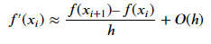
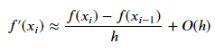
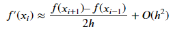
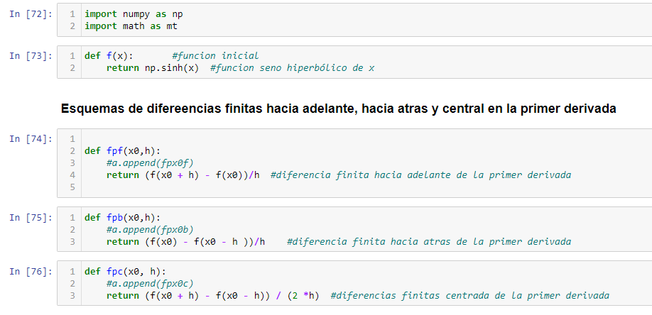

DIFERENCIACIÓN E INTEGRACIÓN NUMÉRICAS CON PYTHON
Diferenciación Numericas
La diferenciación es algo común en ingeniería a causa de que mucho de nuestro trabajo implica analizar los cambios de las variables, tanto en el
tiempo como en el espacio. De hecho, muchas de las leyes, y otras generalizaciones que aparecen constantemente en nuestro trabajo, se basan en las
maneras predecibles donde el cambio se manifiesta en el mundo físico. Un ejemplo importante es la segunda ley de Newton, que no se expresa en términos
de la posición de un objeto, sino más bien en el cambio de la posición con respecto al tiempo.
De acuerdo a la definición del diccionario, diferenciar significa “marcar por diferencias; distinguir;… percibir la diferencia en o entre”.
En el contexto de las matemáticas, la derivada sirve como el principal vehículo para la diferenciación, representa la razón de cambio de
una variable dependiente con respecto a una variable independiente. La definición matemática de la derivada empieza con:
Fórmulas de diferenciación con alta exactitud
Aproximación a la primera derivada con diferencias finitas hacia adelante
Aproximación a la primera derivada con diferencias finitas hacia atrás
Aproximación a la primera derivada con diferencias finitas centradas
Código en Python para el Métodos de diferencia finita hacia adelante, hacia atrás y central en la primera derivada:
